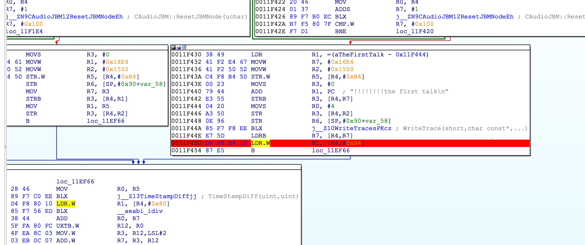

希望变的和F-Secure Labs一样能打
搞移动端应用审计也有段时间了，除了常规的漏洞之外，我更喜欢逻辑漏洞，逻辑漏洞比较依赖梳理代码，比如最常见的就是导出组件，通过发送Intent去调用它，传入数据，能利用到什么程度就看后续的代码都做了哪些工作，比如我传入一个字段"url"，后续直接将这个字段的值进行loadUrl()，而且这种漏洞如果存在于系统应用，则可以进行全局的逻辑分析
F-Secure Labs是我最喜欢的安全团队之一，每篇文章都是实打实的干货，贼能打！
他们曾经公开分享过如何用十一个逻辑漏洞攻破Samsung S8，相当Nice
这个Slides我不止一次在文章里提过，我也跟着分析过，说真的，完全是可以自动化发现的
我周末的时候在看即时通讯APP的开发，依旧是两倍速，快速的看了些关键的地方，比如是选择Socket还是XMPP，服务端框架，常见的XMPP客户端，常见的第三方SDK解决方案，还有零零散散的一些其它关于即时通讯的开发教程，总的来说目前是对于即时通讯这部分有了一个初步的认识
之所以看IM应用是因为我要补全自己对于业务交互数据处理方面的审计能力，像IM应用就是极其合适的一种应用，IM应用的语音模块，视频模块刚好满足我的要求
这小半年出了一些关于这种通讯类应用的研究成果，向PJ0和盘古的大佬们学习！
微信的内存破坏漏洞，来自PJ0的女黑客Natashenka，有幸现场看过大佬的演讲，怎么说呢，大佬比照片上看起来更结实一些，果然越强壮技术越强
按照漏洞报告时间来看的话，Natashenka分析的版本应该是v7.0.*，通过对不同版本的对比以及Crash日志的偏移，可以判断是v7.0.5
#00 pc 0x1d84 /system/lib/libc.so (memcpy+4294873188)#01 pc 0x1219ff /data/app/com.tencent.mm-TQNkaubz5b3G-b5myc_RkA==/lib/arm/libvoipCodec.so(CAudioJBM::InputAudioFrameToJBM(unsigned char*, int, unsigned int, unsigned short, int, int, int)+2298)

V7.0.6计算出来的位置如下，明显不符合

我就是简单看了下，可能计算的不对，接下来再仔细研究学习，网络上分析微信协议啥的文章很多，都看一遍找找感觉，没搞过微信的我心慌慌，万一干不过再把号给整没了:(
微信这个漏洞我暂时不想硬上去分析，在写脚本辅助分析梳理流程，Frida是我们共同的好朋友:)
目前我对于这部分是梳理出了一些研究思路，在没有研究成果之前也不好在这里瞎吹，有产出我就写篇文章自吹一下，要是没产出我就当没搞过这玩意，今天就这样吧
最后：挖到了漏洞有点小成果不要在我这里刷优越感，我可是会拉黑人的:)